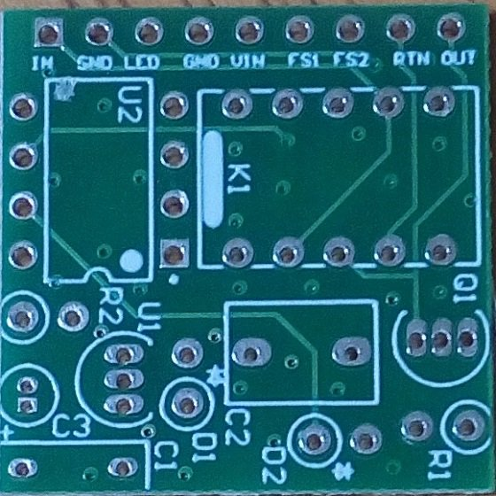
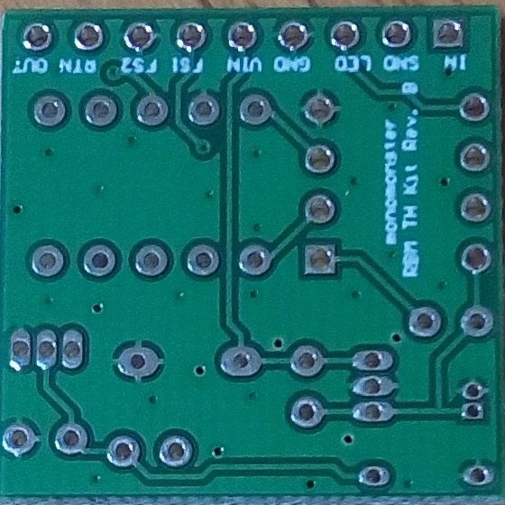
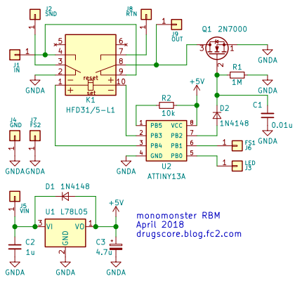
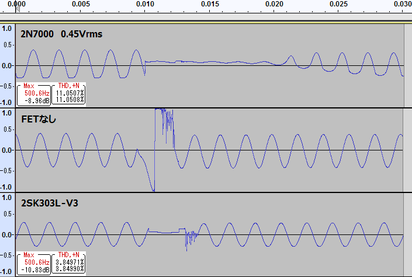

monomonster Relay Bypass Module 解析
2018年04月30日 カテゴリー：実験等
SPSTモーメンタリースイッチを使ってトゥルーバイパス＋LED切替が実現できるmonomonster Relay Bypass Module (RMB)というものがGarrettaudioで販売されています。一体どういったものなのか興味があり、購入後回路を調べてみました。
▽基板写真
 
▽回路図

ATTiny13AというマイコンとHFD31/5-L1というラッチリレーが使われています。やたらとフィルムコンデンサが大きいので、積層セラミックコンデンサに変えてもよさそうです。出力側にある2N7000はスイッチングノイズ軽減の役割があると思われます。エフェクト回路の入力をGNDに落とすため、リレーの2番端子はGNDに繋ぐのが普通かと思いますが、基板裏のベタパターンが離れているために実際はどこにも繋がっていません（表のベタ塗りを忘れたのかも）。
スイッチングの様子を録音しました。

スイッチング時10ms程度出力がミュートされるプログラムとなっているようです。しかしながらMOSFETは構造上ダイオードが入っている（寄生ダイオード）ため、音量が大きいと波形がクリップされます。2N7000を外した場合は、スイッチング時大きくノイズが入ります。たぶん通常の3PDTスイッチと同じ程度のノイズだろうと思います。試しに2N7000を2SK303に差し替えた場合（足を曲げる必要あり）も録音しましたが、この場合はIdssの影響か音量が下がり波形も歪んでしまいました。
結局このモジュールはそのままでは使いにくいという結果となりました。回路採取にミスがないとも言い切れませんが……とにかく購入される方は注意が必要だと思います。